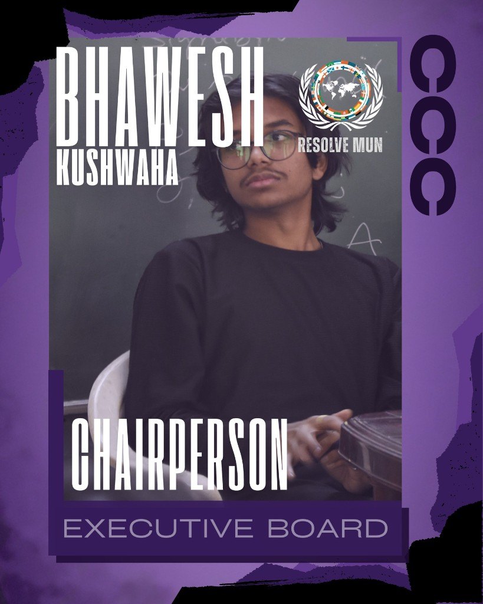
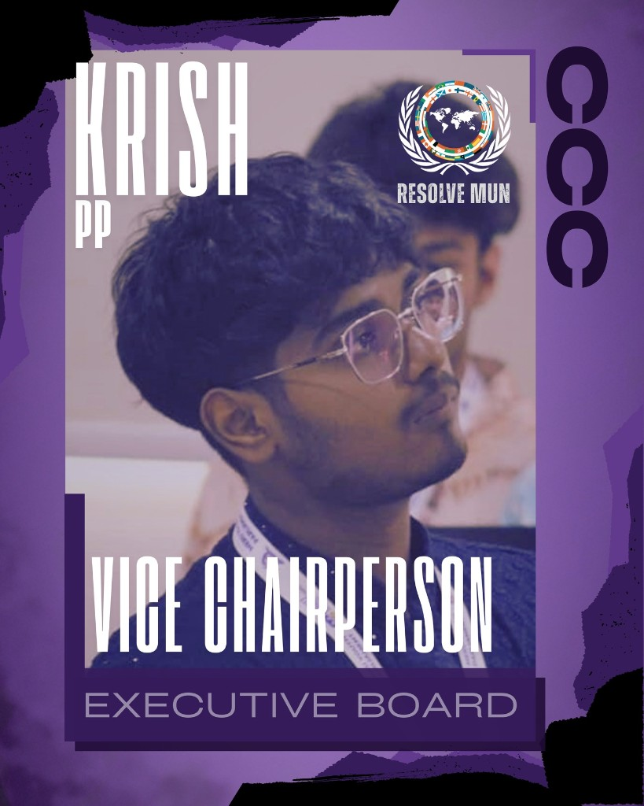
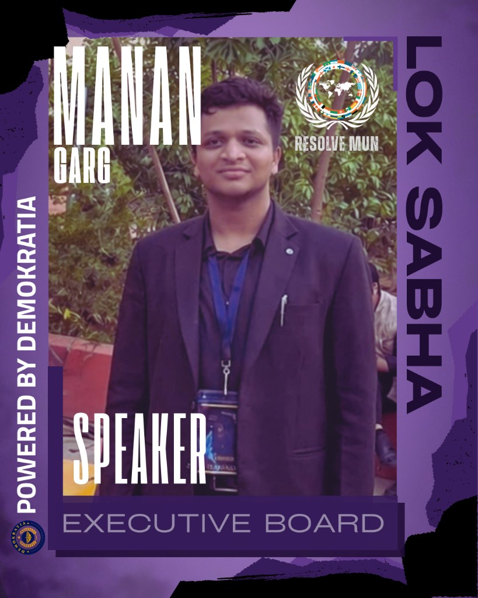

Crisis Council
CCC
High-intensity crisis simulation with evolving directives.
Continuous Crisis Committee
Delegates navigate fast-moving geopolitical scenarios. The committee operates on a freeze date of 12 July, 2026 — all intelligence and world conditions are fixed to that moment unless crisis updates dictate otherwise.
Freeze date: 12 July, 2026
The Committee
The Continuous Crisis Committee (CCC) tests rapid decision-making, back-channel diplomacy, and creative crisis response.
Key debate questions
- When should diplomacy yield to unilateral crisis action?
- How do blocs balance national interest against collective security?
- What intelligence can delegates trust when crisis updates shift the board?
What to expect
- Portfolio-driven directives and private communiqués.
- Escalating crisis arcs tied to the freeze-date world order.
- Collaboration and competition across blocs.
Leadership
Executive Board
The dais leading CCC at ONYX MUN 2026.


